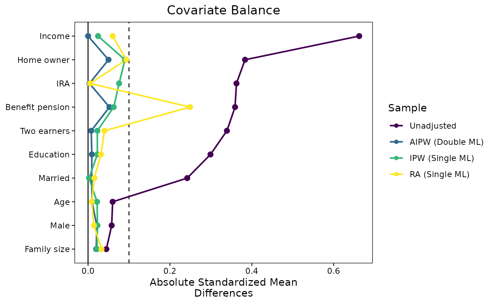

AIPW vs. RA and IPW
Michael C. Knaus
03/25
NB_OutcomeWeights_AIPW_401k.RmdHigh-level motivation
Augmented inverse probability weighting (AIPW) a.k.a. doubly robust estimator a.k.a. Double ML for interactive regression model has attractive theoretical properties as it fits into the Double ML universe of Chernozhukov et al. (2018). On a very high level, these properties arise from AIPW leveraging both outcome and treatment information when estimating average treatment effects. This is in contrast to (single ML) regression adjustment (RA) or inverse probability weighting (IPW), which leave treatment and outcome information on the table, respectively.
But does this matter in practice? The outcome weights derived in Knaus (2024) allow to compare the three estimators in an task familiar to many practitioners: covariate balancing.
Comparison in the 401(k) data
First, we load packages and set the seed.
if (!require("hdm")) install.packages("hdm", dependencies = TRUE); library(hdm)
if (!require("cobalt")) install.packages("cobalt", dependencies = TRUE); library(cobalt)
if (!require("viridis")) install.packages("viridis", dependencies = TRUE); library(viridis)
if (!require("OutcomeWeights")) install.packages("OutcomeWeights", dependencies = TRUE); library(OutcomeWeights)
set.seed(1234)Next, we load the 401(k) data of the hdm package.
However, you can adapt the following code chunk to load any suitable
data of your choice. Just make sure to call the outcome Y,
the treatment D and covariates X. The rest of
the notebook should then run without further modifications.
data(pension) # Find variable description if you type ?pension in console
# Treatment
D = pension$p401
# Outcome
Y = pension$net_tfa
# Controls
X = model.matrix(~ 0 + age + db + educ + fsize + hown + inc + male + marr + pira + twoearn, data = pension)
var_nm = c("Age","Benefit pension","Education","Family size","Home owner","Income","Male","Married","IRA","Two earners")
colnames(X) = var_nm
N = length(Y)AIPW and its weights
In the following we run double ML with honest random forest using the
OutcomeWeights internal implementation called
dml_with_smoother() (other packages do not store the
outcome smoothers required to calculate the outcome weights).
Run AIPW:
aipw = dml_with_smoother(Y,D,X,
# progress=T, # uncomment to see progress
# tune.parameters = "all", # uncomment to tune hyperparameters
estimators = "AIPW_ATE")
summary(aipw)## Estimate SE t p
## AIPW-ATE 11553.5 1164.5 9.9216 < 2.2e-16 ***
## ---
## Signif. codes: 0 '***' 0.001 '**' 0.01 '*' 0.05 '.' 0.1 ' ' 1
plot(aipw)
Now, we use the get_outcome_weights() method to extract
the outcome weights as described in the paper.
omega_aipw = get_outcome_weights(aipw)IPW weights
The dml_with_smoother objects also store the required
components to calculate the canonical IPW weights.
D.hat = aipw$NuPa.hat$predictions$D.hat
omega_ipw = matrix(D / D.hat - (1-D) / (1-D.hat),1) / NRA weights
The dml_with_smoother objects also store the required
components to get the RA weights that are rarely used but easy to
obtain.
Check covariate balancing
We use the infrastructure of the cobalt
package to plot Standardized Mean Differences. To do so, we need to flip
the sign of the untreated outcome weights to make them compatible with
the cobalt framework. This is achieved by multiplying the
outcome weights by 2 \times D-1.
threshold = 0.1
love.plot(
D ~ X,
weights = list(
"AIPW (Double ML)" = as.numeric(omega_aipw$omega * (2*D-1)),
"IPW (Single ML)" = as.numeric(omega_ipw * (2*D-1)),
"RA (Single ML)" = as.numeric(omega_ra * (2*D-1))
),
thresholds = c(m = threshold),
var.order = "unadjusted",
binary = "std",
abs = TRUE,
line = TRUE,
colors = viridis(4)
)
The covariate balancing of AIPW is at least as good as the balancing of IPW and RA, and in some cases substantially better. In particular, the failure of RA to balance “Benefit pension” is striking.
Conclusion
This should only serve as a small appetizer to engage with the OutcomeWeights
package. If you run this on other data, please feel free to share your
results via any channel. In particular, if you find qualitatively
different behavior. Also please share any issues on GitHub.